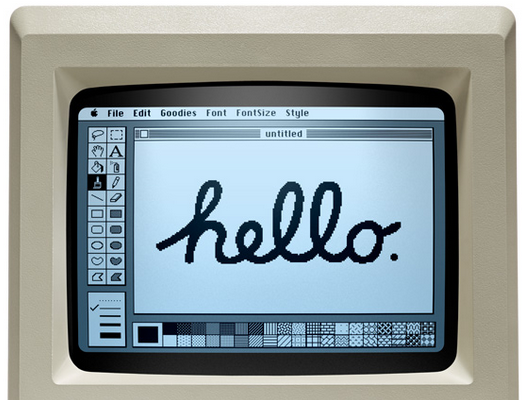

<!DOCTYPE html>
<html>
<head>
  <title>Théophile</title>
  <meta charset="utf-8">

 <link href="https://fonts.googleapis.com/icon?family=Material+Icons" rel="stylesheet">
  <link rel="stylesheet" href="https://cdnjs.cloudflare.com/ajax/libs/materialize/1.0.0/css/materialize.min.css"> 

  <link rel="stylesheet" type="text/css" href="./styles.css"> 


<body>

<div class="center ">
  
</div>
<!--

    <div  data-3400="opacity: 0;top: 0%;" 
        data-3600="opacity: 1.5; top: 50%;" 
        data-4000="margin-left: 0px;" 
        data-4200="opacity: 0; margin-left: -200px;">I know how to draw:</div>

<div
        data-4400="opacity: 0;margin-left: 200px;"  
        data-4600="opacity: 1;margin-left: 0px;"  
        data-5400="" 
        data-6000="opacity: 0;margin-left: -200px; margin-top: -100px;"><br><br>
</dir>
  <div  data-4400="opacity: 0;margin-left: 200px;"  
        data-4600="opacity: 1;margin-left: 0px;"  
        data-5400="" 
        data-6000="opacity: 0;margin-left: -200px; margin-top: -100px;"><br><br>
          <span data-4700="opacity: 0"
                data-5100="opacity: 1">( if you are not sure, this is a cat )</span>
              </div> -->
</body>

<script type="text/javascript"> 
  $(function(){
    skrollr.init({
    forceHeight: false
  });
});
</script>

</html>
